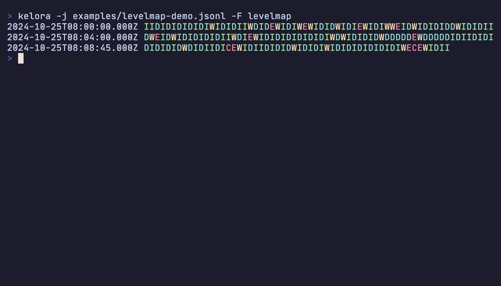

Format Reference¶
Input format: -f, --input-format <format>. Output format: -F, --output-format <format>. kelora --help-formats prints a condensed version of this page.
Input Formats¶
| Format | Input | Fields |
|---|---|---|
auto |
Default. Detects one format (see Auto-Detection) | depends |
json / -j |
JSON Lines, one object per line | all keys, types kept |
line |
Plain text | line |
raw |
Plain text | raw |
logfmt |
key=value pairs |
all keys |
csv, tsv, csvnh, tsvnh |
Delimited, with or without header row | header names or c1, c2, … |
syslog |
RFC 5424 and RFC 3164 | pri, facility, severity, level, ts, host, prog, pid, msg, … |
combined |
Apache/Nginx access logs | ip, ts, method, path, status, … |
cef |
ArcSight Common Event Format | header fields + extensions |
cri |
Kubernetes CRI/containerd container logs | ts, stream, tag, msg |
glog, log4j, postgres, … |
Built-in application-log formats | ts, level, msg + extras |
cols:<spec> |
Whitespace- or separator-delimited columns | named in the spec |
regex:<pattern> |
Anything a regex with named groups can match | named groups |
auto-per-file |
Detects separately for each file | depends |
<fmt1>,<fmt2>,… |
Cascade: first parser that succeeds wins, per line | + _format |
A line that a parser rejects is a parse error: it is counted, reported on stderr and skipped. --strict aborts on it instead.
JSON Format¶
One JSON object per line. All keys become fields with their JSON types (string, int, float, bool, null, nested map, array). A top-level array is a parse error.
For pretty-printed objects that span several lines, join them first: -j -M 'regex:match=^\{' (each object starts with { in column 1), or -j -M all for a single document. See multiline.md.
Line and Raw Formats¶
| Format | Field | Blank lines | Trimming |
|---|---|---|---|
line |
line |
kept, as line="" |
trailing \n/\r removed |
raw |
raw |
skipped | none by the parser |
Leading and trailing spaces, tabs and backslashes are kept by both. line is the auto fallback when nothing else matches. Both accept every line, so in a cascade they must come last.
Logfmt Format¶
- Every pair becomes a top-level field. Keys may contain any non-space characters except
=(a.b-c,k:xare fine). - Unquoted values are typed:
500→ int,1.5and1e3→ float,true/True→ bool.007stays a string. - Quoted values may contain spaces and
\".key=gives an empty string. - A bare word without
=is a parse error.
CSV / TSV Formats¶
| Format | Delimiter | Header |
|---|---|---|
csv |
, |
first row |
tsv |
tab | first row |
csvnh |
, |
none; fields c1, c2, … |
tsvnh |
tab | none; fields c1, c2, … |
Values are strings unless you annotate them (see Type Annotations):
- RFC 4180 quoting:
"a, b","say ""hi""", and quoted fields containing newlines (also under-P). An unclosed quote at end of input is anUnterminated quoted fielderror. - Ragged rows are kept. Columns beyond the header (or beyond the first row with
csvnh/tsvnh) get positional names (c4,c5, … counted from 1). Short rows leave the missing fields absent. A hint reports both counts.--strictmakes a ragged row a fatal error.
Syslog Format¶
<165>1 2024-01-15T10:30:00.000Z myhost myapp 1234 ID47 - Connection failed
<34>Jan 15 10:30:00 myhost myapp[1234]: Connection failed
| Field | Type | RFC 5424 | RFC 3164 | Description |
|---|---|---|---|---|
pri |
int | ✓ | if <N> present |
priority = facility × 8 + severity |
facility |
int | ✓ | if <N> present |
|
severity |
int | ✓ | if <N> present |
0–7 |
level |
string | ✓ | if <N> present |
EMERG ALERT CRIT ERROR WARN NOTICE INFO DEBUG (severity 0–7) |
ts |
string | ✓ | ✓ | timestamp as written |
host |
string | ✓ | ✓ | |
prog |
string | ✓ | ✓ | |
pid |
int | ✓ | if [pid] present |
RFC 5424: string if not numeric |
msgid |
string | ✓ | – | |
version |
int | ✓ | – | |
msg |
string | ✓ | ✓ |
RFC 5424 fields whose value is - are omitted. Structured data is not extracted. RFC 3164 timestamps have no year; see time-reference.md.
Combined Log Format¶
Handles Common Log Format, Combined, and Nginx Combined with a trailing request time (quoted or bare, as nginx's $request_time), detected per line:
192.168.1.1 - user [15/Jan/2024:10:30:00 +0000] "GET /index.html HTTP/1.0" 200 1234
192.168.1.1 - - [15/Jan/2024:10:30:00 +0000] "GET /api HTTP/1.1" 200 1234 "http://example.com/" "Mozilla/5.0"
192.168.1.1 - - [15/Jan/2024:10:30:00 +0000] "GET /api HTTP/1.1" 200 1234 "-" "curl/7.68.0" "0.123"
192.168.1.1 - - [15/Jan/2024:10:30:00 +0000] "GET /api HTTP/1.1" 200 1234 "-" "curl/7.68.0" 0.123
| Field | Type | Common | Combined | Nginx | Description |
|---|---|---|---|---|---|
ip |
string | ✓ | ✓ | ✓ | client address |
identity |
string | ✓ | ✓ | ✓ | RFC 1413 identity |
user |
string | ✓ | ✓ | ✓ | auth user |
ts |
string | ✓ | ✓ | ✓ | 15/Jan/2024:10:30:00 +0000 |
request |
string | ✓ | ✓ | ✓ | full request line |
method |
string | ✓ | ✓ | ✓ | from request |
path |
string | ✓ | ✓ | ✓ | from request |
protocol |
string | ✓ | ✓ | ✓ | from request |
status |
int | ✓ | ✓ | ✓ | |
bytes |
int | ✓ | ✓ | ✓ | 0 is kept |
referer |
string | – | ✓ | ✓ | |
user_agent |
string | – | ✓ | ✓ | |
request_time |
float | – | – | ✓ | seconds |
Any field whose value is - is omitted.
A line with anything after user_agent and the optional request time (an nginx log_format with extra fields such as rt= or upstream=) is a parse error, not silently truncated. The error names the column and the unexpected text, e.g. unexpected trailing text after user_agent at column 122: 'trace=abc123'; parse such logs with a regex: format that captures the extra fields.
CEF Format¶
| Field | Type | Description |
|---|---|---|
ts |
string | from an optional syslog prefix (Jan 15 10:30:00 host CEF:…) |
host |
string | from the optional syslog prefix |
cefver |
string | CEF version |
vendor |
string | device vendor |
product |
string | device product |
version |
string | device version |
eventid |
string | signature ID |
event |
string | event name |
severity |
string | 0–10 |
Each extension pair becomes a top-level field. Extension values are typed: 1232 → int, 1.5 → float, true → bool. Everything else, including IP addresses, stays a string.
CRI Format¶
The Kubernetes CRI/containerd log layout <RFC3339Nano> <stream> <tag> <message>: files under /var/log/pods/, and kubectl logs --timestamps output.
2024-07-17T12:12:05.123456789Z stdout F {"level":"info","msg":"started"}
2024-07-17T12:12:06.223456789Z stderr P panic: runtime error: nil pointer
| Field | Type | Description |
|---|---|---|
ts |
string | runtime timestamp |
stream |
string | stdout or stderr |
tag |
string | F full line, P partial (the runtime split a long line; the following lines up to the next F continue it) |
msg |
string | the container's line, verbatim |
kelora pod.log -f cri --filter 'e.stream == "stderr"' -k ts,msg
kelora pod.log -f cri --exec 'e.absorb_json("msg")' --filter 'e.level == "error"'
Auto-detection tries cri before logfmt and CSV, so a JSON or logfmt payload does not hide it. Docker's json-file driver writes one JSON object per line (log, stream, time); use -f json for that.
Built-in Application-Log Formats¶
Fixed layouts parsed with built-in regexes. Select with -f <name> or in a comma cascade (-f log4j,line). Except for cri (above), auto-detection tries them only after every other format and just before the line fallback. Most definitions are adapted from lnav (BSD-3-Clause).
| Format | Example line | Fields besides ts, level, msg |
|---|---|---|
apache-error |
[Fri Oct 11 14:32:52 2024] [core:error] [pid 1234:tid 5678] [client 10.0.0.1] File does not exist |
module, pid, tid, client (each optional) |
glog |
I0102 15:04:05.123456 1 main.go:42] started |
pid, source; level is I/W/E/F |
haproxy |
Feb 06 12:14:14 lb haproxy[14389]: 10.0.1.2:33317 [06/Feb/2024:12:14:14.655] http-in static/srv1 10/0/30/69/109 200 2750 - - ---- 1/1/1/1/0 0/0 "GET / HTTP/1.1" |
see below |
iso8601-level |
2024-01-02T15:04:05Z INFO started (space instead of T, […] brackets, and , fractions also match) |
– |
log4j |
2024-01-02 15:04:05,123 INFO [main] com.example.App - started |
thread, logger |
nginx-error |
2024/01/02 15:04:05 [error] 29#29: open() failed |
pid, tid |
postgres |
2024-01-02 15:04:05.123 UTC [1234] LOG: ready |
pid, log_tz |
python-logging |
2024-01-02 15:04:05,123 - myapp.db - INFO - connected |
logger |
redis |
12345:M 06 Feb 2024 12:00:00.123 * Ready |
pid, role; level is the marker . - * # |
s3 |
AWS S3 server access log | owner, bucket, client, requester, req_id, op, key, method, uri, query, httpver, status, error_code, bytes_sent, obj_size, total_time, turnaround_time, referer, user_agent, then (newer logs) version_id, host_id, sig_version, cipher_suite, auth_type, host_header, tls_version; no level/msg |
haproxy fields: host, proc, pid, client_ip, client_port, accept_date, frontend, backend, server, timers tq/tw/tc/tr/tt (HTTP) or tw/tc/tt (TCP), status (HTTP), bytes_read, termination_state, actconn, feconn, beconn, srv_conn, retries, srv_queue, backend_queue, req_headers/resp_headers (when captured), and the request line in msg (HTTP). It has no level. HAProxy lines are syslog lines, so -f auto detects them as syslog: pass -f haproxy.
Types: fields named pid, tid, client_port, bytes_read and the haproxy connection counters are ints. Everything else is a string, including the s3 and haproxy status, sizes and timers. Convert in a script if you need numbers: --exec 'e.status = to_int(e.status)'.
s3 and haproxy keep a curated set of columns. The unparsed line is still available as meta.line, so a missing column can be extracted in a script:
Format notes:
glogtimestamps have no year; see Year and timezone.postgresmatches only the defaultlog_line_prefix = '%m [%p] '. For a custom prefix use-f regex:. Multi-lineSTATEMENTs (tab-indented continuation lines) need-M indent; without it the continuation lines are parse errors.-f postgres,linekeeps them as separatelineevents instead.postgrestsis naive. The logged zone abbreviation is kept inlog_tzbut not applied, because abbreviations likeCSTorISTare ambiguous. The timestamp is read in--input-tz(default UTC). For a server whoselog_timezoneis not UTC, pass e.g.--input-tz Europe/Berlin.
Column Format¶
-f 'cols:<spec>' splits on whitespace (runs of spaces count as one separator), or on the string given with --cols-sep.
| Token | Meaning |
|---|---|
name |
one column |
name(N) |
N columns joined with a space |
- / -(N) |
skip one / N columns |
*name |
rest of the line; must be last |
name:type |
apply a type: int, float, bool, string |
# ERROR api "Connection failed" → level, service, msg='"Connection failed"' (quotes kept)
kelora -f 'cols:level service *msg' app.log
# 2024-01-15 10:30:00 INFO Started → ts='2024-01-15 10:30:00' (detected as timestamp)
kelora -f 'cols:ts(2) level *msg' app.log
# bob|42|Berlin
kelora -f 'cols:name age:int city' --cols-sep '|' data.txt
A line with too few columns sets the missing fields to (). Extra columns are dropped unless the spec ends in *name. Neither is an error, even under --strict. With --cols-sep, empty columns (a||b) become empty strings.
Regex Format¶
-f 'regex:<pattern>'. The pattern is anchored automatically: the whole line must match. Each named group becomes a field.
| Syntax | Result |
|---|---|
(?P<name>…) or (?<name>…) |
string field |
(?P<name:int>…), :float, :bool |
typed field (lowercase type names only) |
(?:…) |
non-capturing group |
# 404 Not found
kelora -f 'regex:(?P<code:int>\d+) (?P<msg>.*)' app.log
# 2025-01-15T10:00:00Z [ERROR] Database connection failed
kelora -f 'regex:(?P<ts>\S+) \[(?P<level>\w+)\] (?P<msg>.+)' app.log
# 192.168.1.1 - - [15/Jan/2025:10:00:00 +0000] "GET /api/users HTTP/1.1" 200 1234
kelora -f 'regex:(?P<ip>\S+) - - \[(?P<ts>[^\]]+)\] "(?P<method>\w+) (?P<path>\S+) HTTP/[\d.]+" (?P<status:int>\d+) (?P<bytes:int>\d+)' access.log
- A group that captures an empty string is omitted.
- A line that does not match is a parse error.
- Nested named groups and the names
original_line,parsed_tsandfieldsare rejected when the pattern is compiled. - Single-quote the whole
-fargument so the shell leaves\,$and[alone.
Type Annotations¶
Used by csv/tsv, cols: and regex:. A value that cannot be converted (abc for :int) becomes (); the rest of the event is kept. With --strict the run aborts instead. To choose a fallback yourself, leave out the annotation and convert in a script: --exec 'e.status = to_int_or(e.status, 0)'.
Auto-Detection¶
-f auto is the default. It picks one format:
- stdin: from the first non-empty line. A live pipe never waits for more input.
- Files: from up to the first 64 non-empty lines (max 256 KiB) of the first file that has content. Uncompressed files of 32 KiB or more are also sampled at 1/4, 1/2, 3/4 and the tail. Gzip/zstd files are sampled from the head only.
Each line is tested in this order, first match wins:
json: the line is a JSON objectcef: parses as CEF, with or without a syslog prefixsyslog: RFC 5424 or RFC 3164combinedcrilogfmtcsv/tsv: at least two commas or tabs. If the first field contains no letters,csvnh/tsvnh; otherwise the first line must read as a header row (a field holding prose or a full datetime marks it as data, so a log message with commas is not mistaken for CSV). An explicit-f csvskips this check.- built-in application-log formats
line
Mixed files: if the file sample contains more than one format, kelora parses with <dominant format>,line, exactly like an explicit cascade, and each event gets _format; a hint says so, since the extra field changes the output's shape (--exclude-keys _format drops it, an explicit -f json,line silences the hint). A format needs at least two matching sampled lines to be chosen (in samples of four or more lines). Further structured formats in the sample are not added; their lines become line events and a hint prints the explicit -f (e.g. -f json,syslog,line) that would parse them. CSV/TSV never joins a cascade. On stdin, mixed input is parsed with the first line's format.
-v prints the decision, e.g. Auto-detected format: cascade(json,line) (mixed formats in first 6 lines).
Auto-Detection Per File¶
-f auto-per-file runs the file detection above separately for each file, so JSON and logfmt files can be read in one run:
On stdin it behaves like auto. It cannot be combined with --parallel or --merge-sorted.
Cascade Mode¶
Every line is tried against each format in order. The first that parses it wins, and the event gets a _format field naming that format. Typical use: structured logs with interleaved plain text (panics, banners, stack traces), or files that interleave several services.
kelora -f json,line app.log # noisy JSON
kelora -f json,syslog,line mixed.log
kelora -f json,line app.log --filter 'e._format == "line"'
kelora -f json,line app.log -s # adds "Cascade formats: json=9812, line=23"
| Members | How to list them |
|---|---|
json, line, raw, logfmt, syslog, cef, combined, built-in application-log formats (incl. cri) |
comma list or repeated -f |
cols:<spec>, regex:<pattern> |
repeated -f only (a pattern may contain commas) |
auto, auto-per-file, csv, tsv, csvnh, tsvnh |
not allowed |
kelora -f json -f 'cols:ts(2) level *msg' app.log
kelora -f json -f 'regex:(?P<ts>\S+ \S+) (?P<level>\w+) (?P<msg>.*)' -f line app.log
Repeated -f and comma lists can be mixed; members are tried in the order given.
- Order:
line,rawandcols:accept every line, so they must be last; kelora rejects anything after them.regex:rejects non-matching lines, so it can appear earlier. Put liberal grammars such aslogfmtafter stricter ones. _formatcollisions: if a record already has its own_formatfield, it is kept and not tagged; a warning reports how many events this affected.- Multiline:
-Mgrouping runs before parsing and follows the first format's strategy. - Works with
-P/--parallel.
Output Formats¶
| Format | Output | Requirements |
|---|---|---|
default |
colored key='value' pairs |
|
json / -J |
JSON Lines | |
logfmt |
key=value pairs |
|
inspect |
one field per line with its type | |
levelmap |
timeline of one glyph per event (first letter of the level) | no -P |
keymap |
timeline of the first character of one field; . when missing or empty |
-k with exactly one field; no -P |
tailmap |
timeline of one numeric field by percentile: _ below p90, 1 p90–p95, 2 p95–p99, 3 above p99, . missing |
-k with exactly one numeric field; no -P |
csv, tsv |
delimited, header row | -k (sets the columns) |
csvnh, tsvnh |
delimited, no header | -k |
kelora -j app.log -F csv -k ts,level,msg
kelora access.log -F keymap -k status
kelora api.log -F tailmap -k response_time
CSV/TSV: columns appear in -k order; a field missing from an event is an empty cell. Nested maps and arrays are flattened into a single cell, e.g. {"x":[1,2],"y":"q"} becomes x_0:1,x_1:2,y:q. Values with quotes or delimiters are quoted CSV-style (also in TSV).
Nested values in other formats: default prints them as JSON, logfmt flattens them like CSV into one quoted value, json and inspect keep the structure.
Maps (levelmap, keymap, tailmap):

- Each row starts with the timestamp of its first event, even if
-kdoes not select the timestamp field. Without a timestamp (none detected, or removed with--exclude-keys) the row starts withline N, the number padded to a fixed width so the glyph columns stay aligned. - A row holds a fixed number of events, not a fixed span of time: it can cover seconds or hours depending on event density. Compare row labels to see how much time a row covers.
- A one-line legend lists only the glyphs that appeared and the values behind them, e.g.
2 = 200,204 | 4 = 404 | 5 = 500,503.tailmapadds a line with count, range and the p90/p95/p99 thresholds. The legend is shown only when stdout is a terminal;--legendforces it,--no-legendhides it.
-q/--quiet suppresses events; -s/--stats and -m/--metrics imply it.
See also: guide/parse.md, guide/output.md, multiline.md, time-reference.md.